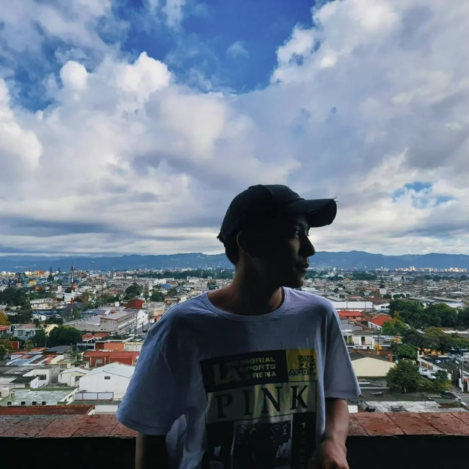

Soy Ronaldo Alberto Bertillo Lorenzo tengo 18 años, vivo en Guatemala, para ser más específico en la Ciudad de Guatemala en el municipio de Villa Nueva, Bárcenas, curso el grado el 5to grado de bachillerato en computación en el Instituto Profesional de Computación durante la semana, pero trabajo los fines de semanas. En mi familia soy el hijo mayor por lo tanto tengo más responsabilidades que asumir. Durante toda mi vida he vivido muchas experiencias que me han hecho cambiar de diferentes formas en el transcurso de mi vida, por lo tanto, el quien soy siempre ha cambiado, pero aún no he sido el alguien que quiero ser, así que aun sigo en el proceso de ser el quien soy deseado
Creo que esto también ha cambiado mucho durante los años, desde pequeño he sido una persona muy tranquila en espacios con personas desconocidas, no se me era fácil hacer amigos ya que he sido tímido, pero en mi casa era otro cuento, me gustaba jugar con mis primos, no era muy aplicados con mis deberes, tampoco fui un hijo fácil para mamá, así era durante mis infancia y adolescencia, pero en estos últimos años he cambiado considerablemente en el cómo soy, ya se me es más fácil hablar en público, aunque no me agrada mucho, trato la manera de poder llevarme con las personas de mi alrededor, a dar el primer paso, he sido más aplicado con mis deberes, pero sigo trabajando en eso. Han sido algunos que cambios que he tenido en mi vida, pero en la parte de los valores no fue un gran cambio, ya que siempre he tenido muy en claro los principio que me inculco mi familia, he sido muy respetuoso con las personas, bondadoso, gentil, solidario, empático, pero no siempre lo he sido correctamente, y esto me lleva al siguiente punto de mí, y es que ha cambio mi punto de vista del mundo, y gracias he cambiado muchas actitudes que para mí antes eran normales, que no hacían daño a nadie, pero he estado cambiando mucho y aun sigo trabajando en eso.
